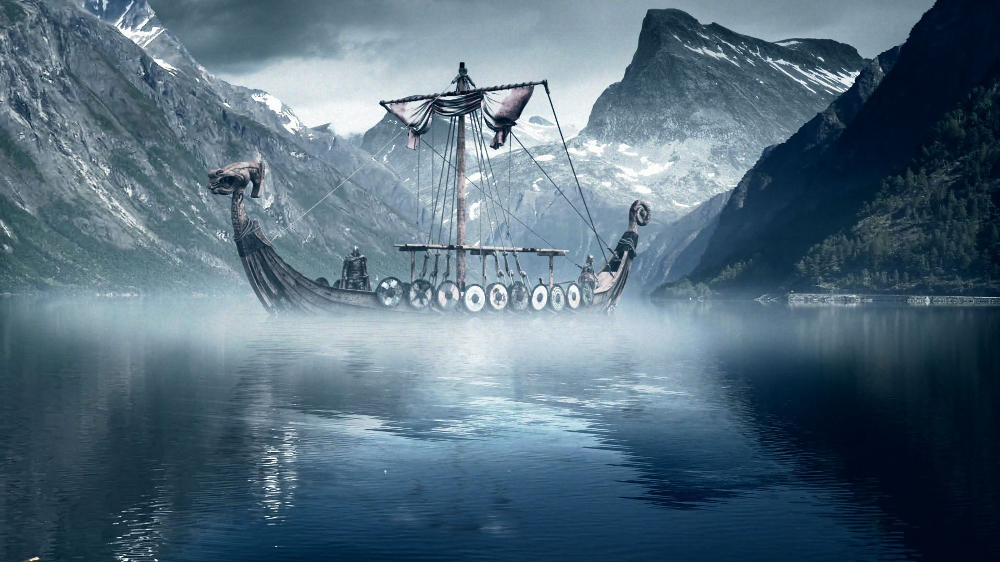
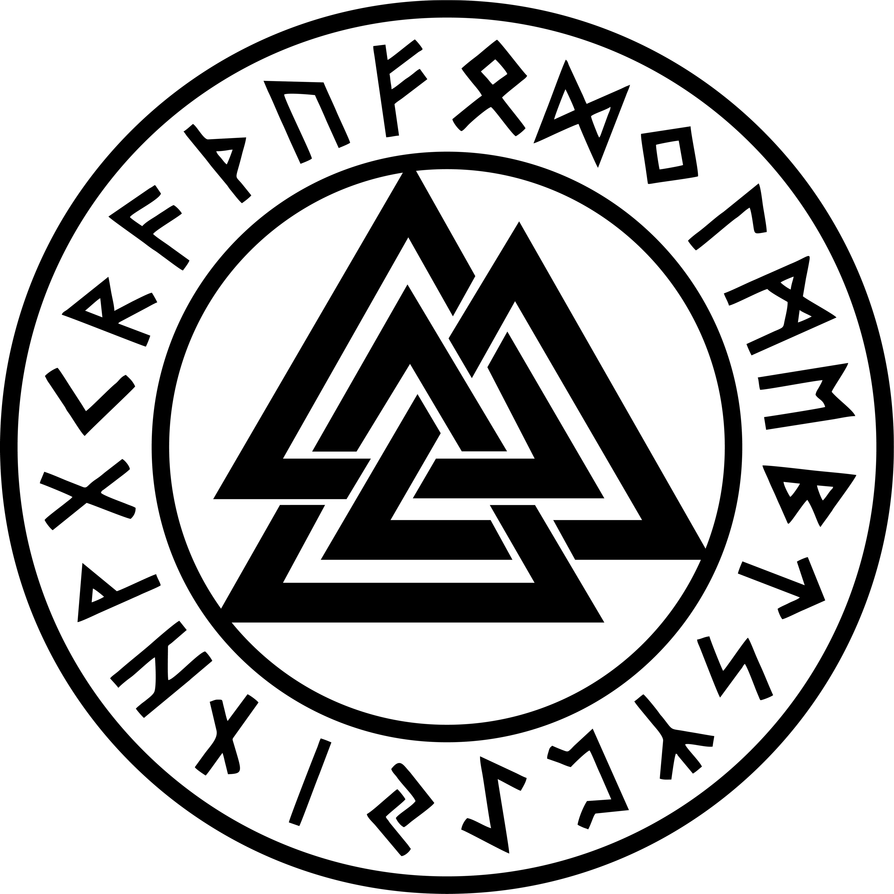
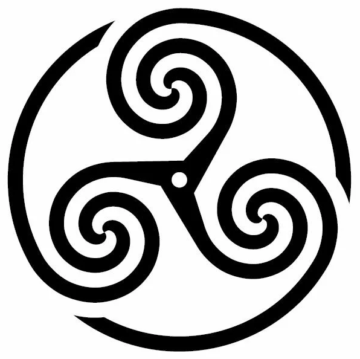
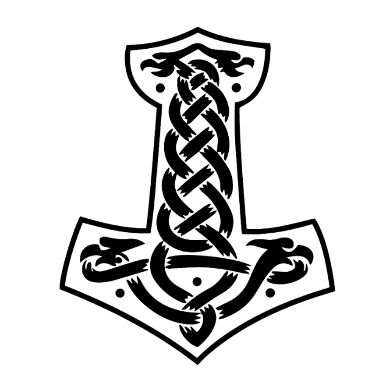
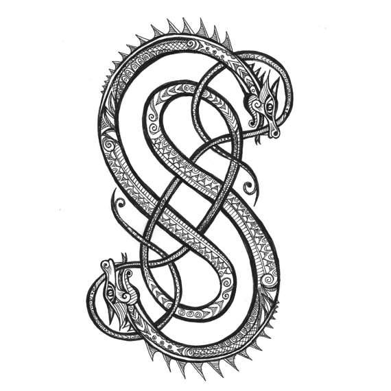

Welcome To Midgard
this wepsite's main inspiration is taken from the odin project (foundation landing bage project) and then changed into a north metholgy themed wepsite

Random Sympols From The North Metholgy

Odin

Frigg

Thor

Loki
"Let no man glory in the greatness of his mind, but rather keep watch o'er his wits. Cautious and silent let him enter a dwelling; to the heedful comes seldom harm, for none can find a more faithful friend than the wealth of mother wit."
-Odin Hávamál